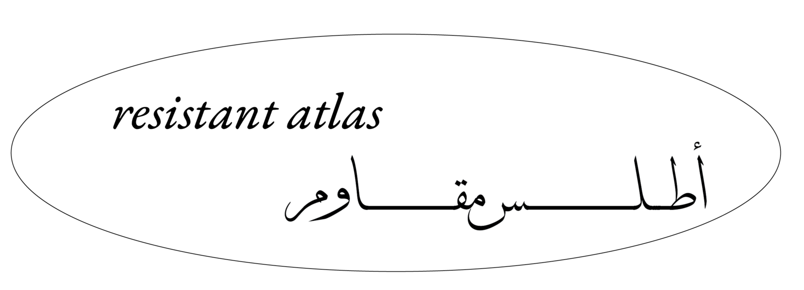
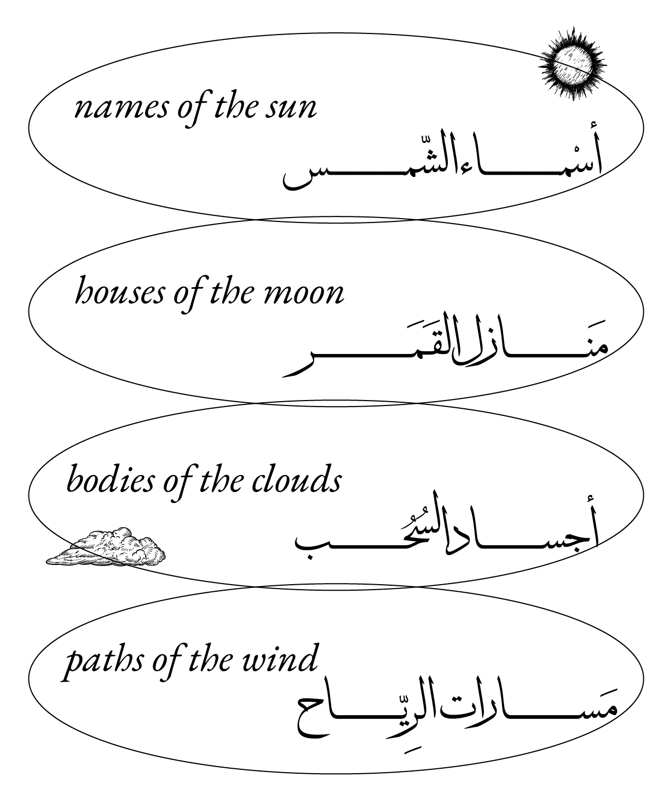
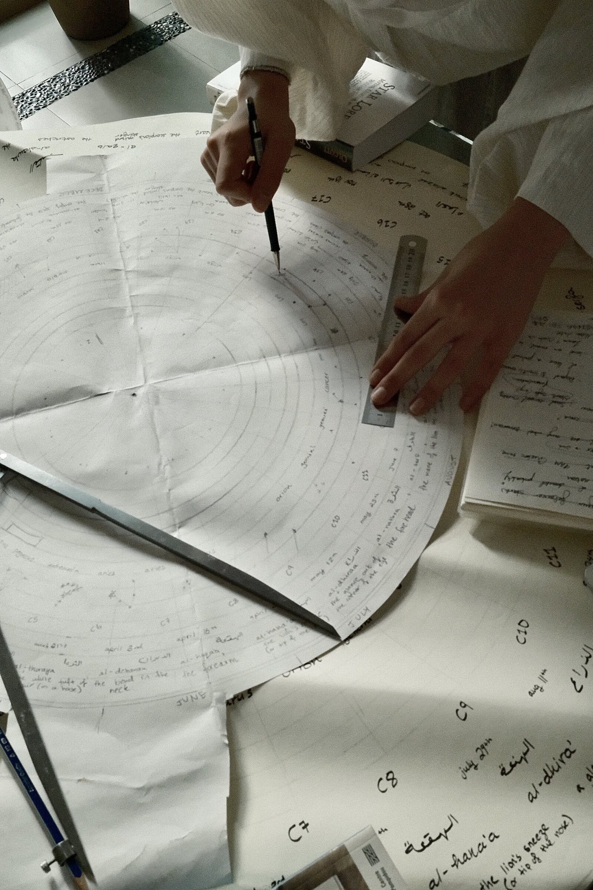

i
Introduction

Resistant Atlas is an ongoing research and design project by Badriyah Alsalem that studies how pre-modern Arab knowledge systems translated the environment into language, orientation, and time. The project attempts to reconstruct lost environmental logics though critical essays, digital tools, and physical artifacts.
Namely, it explores the way Bedouin Arabs experienced and lived through time - a context-specific environmental connection that is mirrored across every civilization living in a barren landscape - the desert, the plains, the arctic, the sea.
The project focuses is on sky-based logics; the movement of the stars, the moon, the sun, and how they have communicated time and space for hundreds of thousands of years, before our reliance on modern tools.
The slow shift from environmental temporal and spatial logic to a flattened logic carries endless worlds of change, from political, to psychological, to cultural, to infinite others.
The four chapters of this research are:

Resistant Atlas: Names of the Sun began as a graduate thesis in the Master of Science in Computational Design Practices program at Columbia University’s Graduate School of Architecture, Planning and Preservation (GSAPP), under the generous guidance of Professor Laura Kurgan, where it received the Most Outstanding Capstone Award (2025). It continues to evolve through international exhibitions and residencies including Diriyah Art Futures (2025–26) in Riyadh and the Sharjah Architecture Triennial 03 (2026–27).
